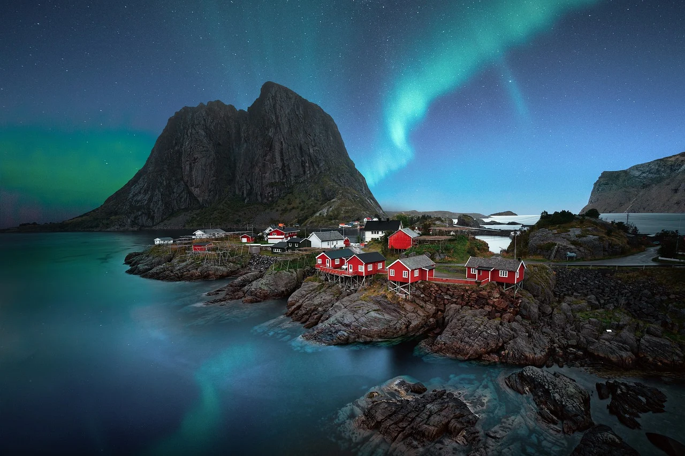
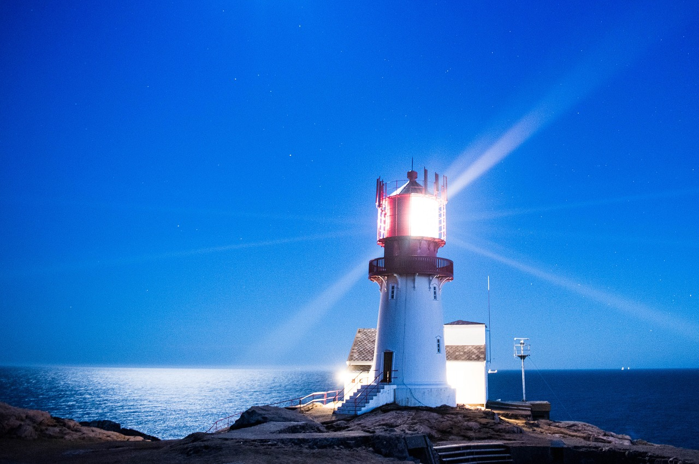
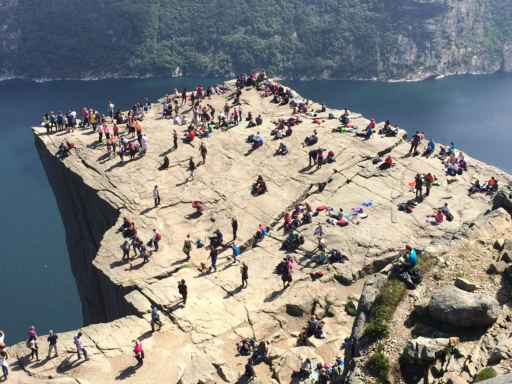
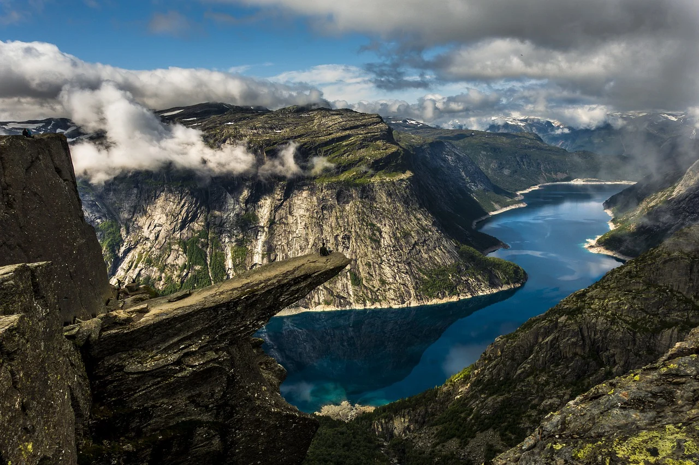
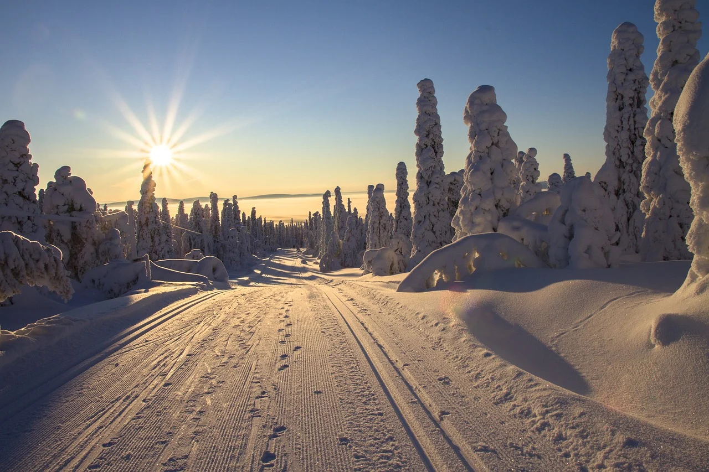
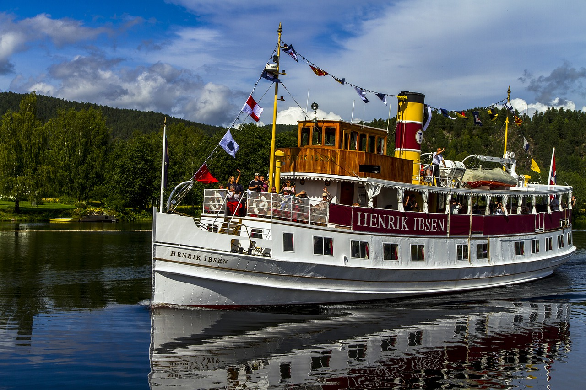

ATTRACTIONS
LOFOTEN

Up north you`ll see the most beautiful night skyes with the aurora borealis (northern lights).
LINDESNES

Go to Lindesnes and you`ll find the most southern point of Norway.
PREKESTOLEN

In western Norway, you can take a hike til Prekestolen. Suitable for all ages.
TROLLTUNGA

Trolltunga is a more advanced hike for people who love a good challange as well as amazing nature.
NORWEGIAN WINTER

During the winter months you are able to go crosscountry skiing or apline skiing
in the snow covered hills and forests.
TELEMARKSKANALEN

During summer, Telemarkskanalen is a wonderful organized boat trip on the river of Telemark.